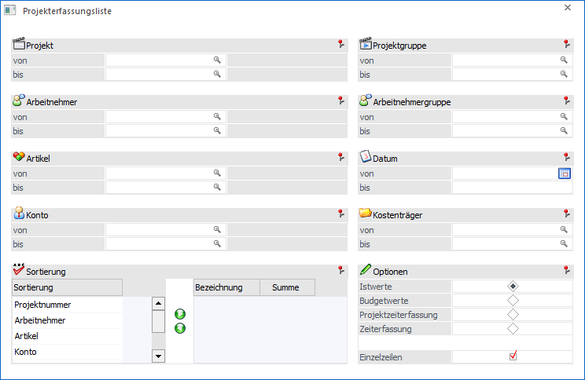
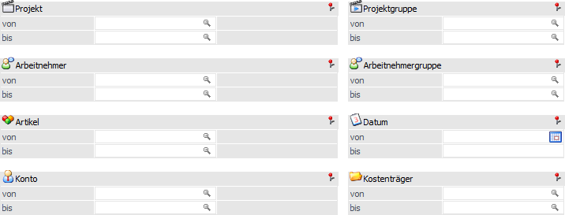
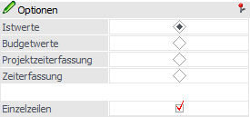
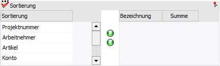
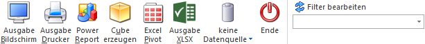

Über den Menüpunkt…
1 WinLine FAKT
1 Auswertungen
1 Projektauswertungen
1 Projekterfassungsliste
… können die Projekterfassungszeilen aufgrund unterschiedlicher Kriterien ausgegeben werden, wobei die Daten auch nach diversen Kriterien sortiert und summiert werden können.
Hinweis
Im Gegensatz zur Projektauswertung werden hier wirklich nur die Erfassungszeilen (Ist- oder Budgetwerte) ausgewertet.

Die Ausgabe kann durch folgende Kriterien eingeschränkt bzw. beeinflusst werden:
Selektion

Die Projekterfassungsliste kann nach den folgenden Kriterien eingeschränkt werden:
Ø Projekt
Hier erfolgt die Einschränkung auf die Projekte, welche ausgewertet werden sollen.
Ø Projektgruppe
An dieser Stelle erfolgt die Einschränkung auf Projektgruppen. Über den Matchcode kann nach allen angelegten Projektgruppen gesucht werden.
Ø Arbeitnehmer
Hier erfolgt die Einschränkung auf die Arbeitnehmer, welche ausgewertet werden sollen.
Ø Arbeitnehmergruppe
Mit Hilfe dieser Felder erfolgt die Einschränkung auf Arbeitnehmergruppen. Über den Matchcode kann nach allen angelegten Arbeitnehmergruppen gesucht werden.
Ø Artikel
An dieser Stelle erfolgt die Einschränkung auf die Artikel, welche ausgewertet werden sollen.
Hinweis
Wird im Feld "Artikel von / bis" z.B. nur eine Artikelnummer eingegeben und dieser Artikel hat auch noch Ausprägungen, so werden alle Ausprägungen automatisch bei der Ausgabe mit berücksichtigt. Nur wenn während des Anklickens des "Ausgabe-Buttons" die STRG-Taste gedrückt wird, wird nur der Hauptartikel alleine ausgewertet.
Ø Datum
Hier erfolgt die Einschränkung des Datums, das ausgewertet werden soll.
Ø Konto
An dieser Stelle erfolgt die Einschränkung der Konten, welche ausgewertet werden sollen.
Ø Kostenträger
Mit Hilfe dieser Felder erfolgt die Einschränkung auf Kostenträger. Über den Matchcode kann nach allen angelegten Kostenträgern gesucht werden.
Optionen

Ø Auswahl
Über diese Auswahl kann gesteuert werden, ob bei der Auswertung die Istwerte, die Budgetwerte, die Projektzeiterfassungen oder die Zeiterfassungswerte berücksichtigt werden sollen.
Ø Einzelzeilen
Standardmäßig ist diese Option aktiviert, womit bei der Auswertung auch immer alle Erfassungszeilen mit ausgewertet werden. Wird die Checkbox deaktiviert, dann wird nur eine Summenzeile ausgegeben.
Sortierung

Hier kann definiert werden, nach welchen Kriterien die Sortierung der Auswertung durchgeführt werden soll. Auf der linken Seite werden alle Möglichkeiten der Sortierung dargestellt:
ü Projektnummer
ü Arbeitnehmer
ü Artikel
ü Konto
ü Projektgruppe
ü Datum
Durch einen Klick auf Button (nach rechts) bzw. per Drag & Drop kann ein Sortierkriterium auf die rechte Seite verschoben werden, wobei die Anzahl der Sortierkriterien nicht beschränkt ist. Pro Sortierkriterium kann auch noch entschieden werden, ob beim Wechsel des Sortierkriteriums eine Summe ausgegeben werden soll.
Buttons

Ø Ausgabe Bildschirm
Mit Hilfe des Buttons "Ausgabe Bildschirm" oder der Taste F5 wird die Auswertung am Bildschirm ausgegeben.
Ø Ausgabe Drucker
Durch Anwahl des Buttons "Ausgabe Drucker" wird die Auswertung am Drucker ausgegeben.
Ø Power Report
Durch Drücken des Buttons "Power Report" wird die Auswertung auf Basis von Cube-Daten grafisch dargestellt. Die Ausgabe ist individuell anpassbar und erfolgt in der Form von "Widgets", die unterschiedlichsten Darstellungen ermöglichen.
Ø Cube erzeugen
Bei Anwahl des Buttons "Cube erzeugen" wird die Projekterfassungsliste im "Olap Viewer" angezeigt. In diesem können die Daten nach verschiedenen Gesichtspunkten (Dimensionen und Fakten) ausgewertet werden.
Ø Excel Pivot
Durch Anwahl des Buttons "Excel Pivot" werden die selektierten Zeilen in Form einer Pivot Ausgabe in Microsoft Excel (2007 oder höher) angezeigt.
Ø Ausgabe XLSX
Mit Hilfe des Buttons "Ausgabe XLSX" werden die selektierten Projekterfassungszeilen an Microsoft Excel übergeben.
Ø Datenquelle
Mit Hilfe dieser Auswahl kann definiert werden, ob und wie eine Datenquelle (d.h. ein Snapshot oder eine MasterView) verwendet werden soll.
ü Keine Datenquelle
Bei Auswahl
von "keine Datenquelle" wird keine zuvor angelegte Datenquelle genutzt. D.h. die
Daten werden von der WinLine "live" ermittelt und in der gewünschten Form
ausgegeben.
Hinweis
Da die BI-Ausgabe (z.B. Cube oder Power Report) immer eine Datenquelle benötigt, wird im Hintergrund eine temporäre Datenquelle (Snapshot) gebildet.
ü Datenquelle
erstellen/aktualisieren
Die Daten werden zur Laufzeit ermittelt und an einen
zu definierenden Snapshot übergeben. Nach dem Füllen der Datenquelle wird die
gewünschte Ausgabevariante über die Datenquelle erzeugt. Dieser Vorgang kann mit
einer Zeitverzögerung verbunden sein, da die Daten zusätzlich gespeichert werden
müssen.
ü Datenquelle verwenden
Bei der
Verwendung eines Snapshots werden die Daten direkt aus der Datenquelle gelesen,
d.h. die für die Ausgabe benötigten Daten können ohne Verzögerung in der
gewünschten Variante ausgegeben werden.
Wird hingegen eine MasterView
gewählt, so werden die Daten für die Ausgabe "live" ermittelt, wobei diese so
aktuell sind wie die zugrunde liegenden Datenquellen.
Hinweis
Der Button "Datenquelle verwenden" wird nur angeboten, wenn für diesen Bereich (bezogen auf den aktuellen Benutzer / Mandanten) zumindest eine private oder öffentliche Datenquelle existiert. Des Weiteren stehen die Ausgabevarianten "Ausgabe Bildschirm" und "Ausgabe Drucker" nicht zur Verfügung.
Hinweis
Weitere Informationen zum Thema "Datenquellen" entnehmen Sie bitte dem Kapitel "Die Datenquelle".
Ø Ende
Durch Drücken des Buttons "Ende" bzw. der Taste ESC wird das Fenster geschlossen.
Ø Filter bearbeiten
Durch Anklicken des Buttons "Filter bearbeiten" kann die Projekterfassungsliste nach frei definierbaren Kriterien eingeschränkt werden.